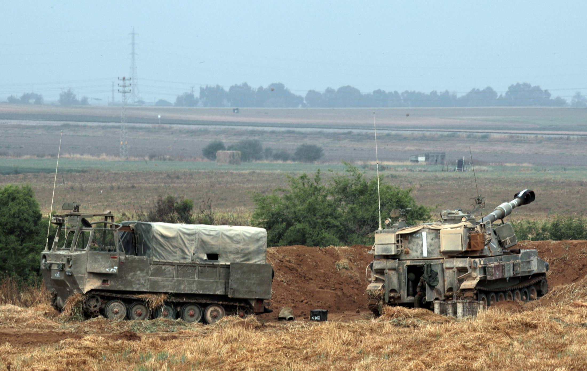

Hundreds of Israeli Families From Gaza Border Communities Seek Respite Elsewhere
Open gallery view
Hundreds of Israeli families living in communities near the border with the Gaza Strip have left their homes in the past few days due to the escalating security situation, which has included intense rocket fire directed at the communities and well beyond from Gaza.Some residents have gone to relatives or are being hosted by families living at a distance from the border region, while others have simply decided to go on vacation elsewhere in Israel.
At least one kibbutz has begun preparations to evacuate its residents as a group.Local governments are encouraging residents to leave the region for a respite, in contrast to previous rounds of hostilities between Israel and Hamas and its allies in Gaza, when leaving had been considered more controversial step – seen by many as abandoning ship or surrender.
Over the past several days, 370 families out of a total of 2,200 in the Sha’ar Hanegev border region have decided to go elsewhere temporarily.According to data collected by the regional council, the phenomenon is more pronounced in communities very close to the Gaza border, where 40 percent of the residents have left, while in the communities farther afield, the figure is about 20 percent.In the nearby Eshkol region,185 families have left.
In recent years, the attitude among local governments and residents in the border regions has shifted on the issue of residents’ leaving during periods of escalation.Such temporary departures are nothing new – but in the past, they also engendered guilt feelings engendered by some of those who remained.
'It was mostly the veteran kibbutzniks, the founding generation and those who came after them,' who had negative views of those who chose to get away, the secretary of one kibbutz in the area told Haaretz.But as security threats grew, awareness of the psychological issues that the residents had to deal with increased too.And as the social structure in the communities changed, recognition of the needs in times of emergency began trickling through and contempt for leaving eased.
'I encourage residents to get out for a respite,' the head of the Sha’ar Hanegev Regional Council, Ofir Liebstein, told Haaretz.He insisted that it should not be considered abandoning ship.
'Not only do I encourage it.I also help and assist those who want or need to leave to recuperate.Children don’t need to be here.'
As noted, at least one kibbutz in the area has begun preparing to evacuate its members as a group.A message sent to kibbutz members in which it acknowledged than many residents of the kibbutz had already begun leaving.The message provided information about a stay at a dormitory on a kibbutz in the north.Most of the rooms there don’t have private bathrooms.The rooms are equipped with bunk beds and food will be served in the dining room at the host kibbutz, the kibbutzniks were informed.
Gilad Kahlon of Kibbutz Zikim just north of the Gaza Strip decided to leave his home along with his family and went to his sister who lives in the north.'At 4 P.M., while I was picking up the children from preschool, I received a message about road closings,' he said.'My wife began packing, while I took one of the children to a birthday party at the same time.We got help from my mother- and father-in-law, and at 5:50 we left the kibbutz … The minute we received the message about road closures, we realized that things were heading towards an escalation and for now it’s preferable to be a bit farther away.'
A., a resident of a kibbutz in the Sha’ar Hanegev region also decided to leave temporarily.'Our approach was that as long as the school system was operating – that there was preschool – there was a logic in staying home for the routine.But we know that when there is a serious escalation, the first thing they do is close the nursery schools, and when we saw the situation in Jerusalem getting out of control, we realized that we needed to pack up and head north,' he said in reference to flash points in the city that were the scene of clashes between Palestinians and Jews and Palestinians and the police.
'So now there will be another military operation in Gaza, several days of disorder, but it won’t really solve anything, and we’ll meet again in the next round in another two months,' he quipped.
$1 for the first month
Posted On: 2021-05-13T00:00:00

Content Date: 2021-05-13
Download Date: 2021-05-19
Document ID: L0C04CIGV